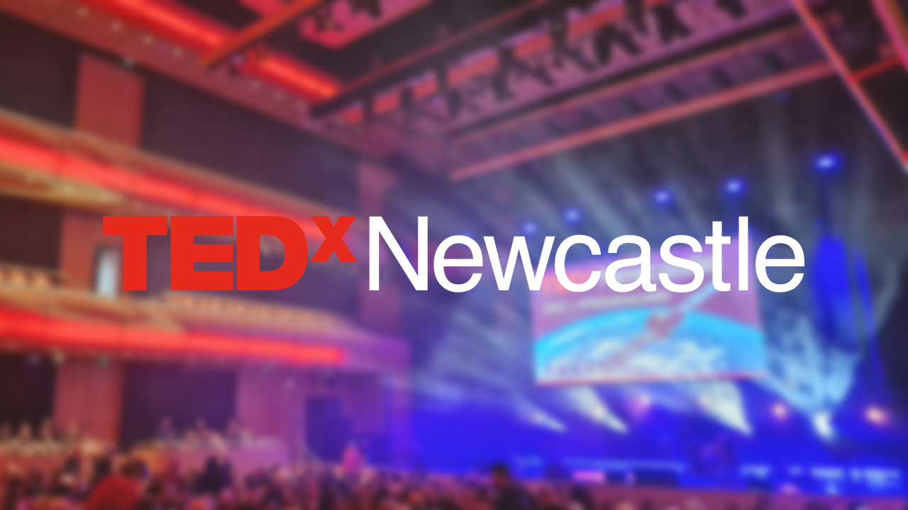

TEDx Newcastle 2023
Welcome
Herb Kim welcomed everyone to TEDx Newcastle in Gateshead, who have convened here in this newly renamed venue The Glasshouse on this chilly although sunny Saturday morning and have been doing TEDx since 2009 where it was held in the Tyneside Cinema, it has been able to grow since then. Some are here for the first time having been a fan of TED talks. They held a warmup dinner last night for the sponsors and speakers and spoke about the event having the ability to take people away from a life full of deadlines and issues and this event helps with a growth mindset for a learning mindset.
Francesca Rosella
Artificial Intelligence is changing the world, they have experienced AI as a creative rebirth, and will find out together today if AI is a competitor or a collaborator. What they do is combining smart electronics to clothing with fashion wearable technology to bring people closer together and bring them closer emotionally. Their work was making other peoples lives better but it was killing their creativity and deep down inside they hated their job, until a rainy afternoon in London they encountered a AI generator. When they encountered this it was like opening a door into another dimension and could use images and words in a way never before and called it a Dream Printer and for example used to show create a fashion show in zero gravity in space. They were able to merge technology and their ideas to create something new, they tried to make chat create their slides, but other results were quite interesting and there is so much inspiration in it they can create something unique. They wanted to harness AI and create a repeatable outcome, they use additive prompting to add more and more they want until they get the outcome they want in a matter of seconds. This is really beautiful and fun and allowed them to enhance product development. They had an opportunity to work with a well-known Italian brand after publishing images on social media they thought were real that was just an AI image and needed to change this into a real product and used all the technologies they could such as a 3D tailoring solution along with wearable LEDs for a self-contained wearable light and use AI to bridge the gap between imagination and reality.
How do people know what is real and what is fake by creating the AI generated fashion for real, it takes a long time to develop technology usually but they were able to output in a shorter period and with like minded individuals all over the world and this made them a better editor of their own work and some of the people in the community are now their best friends. They started to create these prompts and after a few weeks of prompt engineering their garments started to look similar to their real ones and contained things that could only be done on their own work, so they decided to do their own research and these models trawl web for images and ingest them and contain a disembodied flavour and these diffusion models had been trained on their own work. So what about copyright and intellectual property in the age of AI, there was a lawsuit for photos against the generative AI companies as these images have been used in these diffusion models and some of their own dresses have been photographed at New York fashion show so could use Blockchain to track and reward images, so use diffusion models to make sure the original creator is rewarded. How do they see the future of work, how about the job losses, will jobs today exist in twenty years but their own job didn't exist twenty years ago, the world wide web is only 30 years old. In the 1950s they said there would only be need for five computers but today there are millions, and their own dress has its own operating system, need to make sure AI is a tool that goes in a direction that everyone is happy with. Every time they use an AI generative tool their brain reward mechanism goes crazy, they were creating up to a thousand images, their creativity was in a slump and AI helped pull them out of a deep dark well, AI didn't kill them it made them better. Last night midjourney saved their live was something they wrote, it improved their mental health wellbeing. The future of AI is of hybrid intelligence, it will be the convergence of human intuition with artificial intelligence so our creativity can be amplified. They want to make human connectiveness happen and help AI bring down the barriers between the digital and the real - if you think about AI, think about how AI could unlock your creativity and uniqueness.
Gianfranco Rosolia
They were born in Newcastle and educated here and recently spoke at their old secondary school about what they do, they are here to talk about a story about an activist who us under heralded. It is a real honour for them to share a story about a small group of Geordie housewives who fought back about government incompetence and how David took on Goliath and changed the face of the North East for the better. A little further east of here are the towns of Hebburn and Jarrow and during heyday of industrial revolution it was the core of this in Jarrow, but it dwindled in later years as ship building moved away. The situation was desperate and two hundred hungry men marched to London and later the government build a Coke Works in Hebburn, and coke is a smokeless fuel but converting Coal to Coke is a dirty process, but the Coke Works was in an isolated area. One area selected after the war for more social housing was Hebburn. Jennie Sheeran was one of the families invited into these houses but were concerned about its proximity to the Coke Works but it was promised to close down but this was not true and it in fact doubled in size and high levels of sulphur dioxide from a plant that operated twenty four hours a day every day of the year and another estate was built nearby also. Jennie was concerned about the level of pollution so she entered the world of politics to see if she could do something about it, she was the only female chairman of the local county council and also got rent rebates for people living nearby the Coke Works.
The Coke Works would be expanded and include a power station making things even worse for the residents so formed the Hebburn Residents Action Group. Their first move was to present a petition to South Tyneside council underlining the residence to the new power station and asked the prime minister and even the queen for support. They had to write their own letters and make their own phone calls and the local press would have to play a key role in spreading their message. They also organised a demonstration, but thanks to the awareness being raised a public enquiry was arranged and a local solicitor offered their services pro bono for the action group. There comes a time when you live in a community when enough is enough - you're supposed to live there and do nothing about it so the residents took things into their own hands, everyone should stand up and be countered for the benefit of the youth of the future. Jennie represented the community throughout the enquiry and they won and planning permission for the power station was dismissed. The situation in Hebburn was featured on BBC Watchdog to show how bad things were, Jennie had tried to get something done to analyse what was going on so the action group decided to do this themselves and to determine the terrible impact of living next to a Coke Works. It was brought all the way to the European court to show how far they were willing to go to get justice for their town. Jennie was challenging all her energy into getting something done but British Coal got another public enquiry launched, but there was a doctor who was an expert in town planning and a case was put together based on another person's knowledge on legislation on air pollution and filters were commissioned but in the early 90s the Coke Works were finally demolished. In the years that followed there was a question about how the land was polluted and is a green space that employs more people that the Coke Works did. The case catalysed the environmental law foundation for helping people fight for environmental justice. The Evening Chronicle mentioned that they deserved an award for they had done so earlier this week which celebrates the women of the region and a blue plaque was unveiled at Jennie's home by two remaining members of the action group. Jennie's story shows we have more power than we think we have, never doubt that a small group of committed citizens can change the world and are usually the ones that do. Jennie empowered her community and left a greener future for her community and Jennie was his grandma and would have been one hundred years old this year.
Chris Van Tulleken
They help people understand about health and science and are here to talk about the threat of what we can do about it. Food addition isn't a formal diagnosis, but we diagnose addictions by asking questions. Are there foods that cause physical, social or psychological problems, but eat them anyway, have you tried and field to stop these? We don't feel compelled to eat a spoonful of sugar although his daughter does this. None of us can be abstinent from food, in Brazil they noticed that food was being aggressively sold door-to-door and were industrially processed and created the definition of ultra processed food. If you are wondering if a product is ultra processed, then they contain at least one ingredient you wouldn't find in your kitchen. These foods make up a large percentage of our food but as these things has taken over and poor diet has overtaken tobacco as the reason for early death. People are also shorted than those who eat that kind of food and ultra processed food is a problem, it has been linked to anxiety and depression, cancers of any time and weight gain and obesity and we can't seem to stop eating it. We could be abstinent from ultra processed food as it has only been in our diet for a few decades, about 10 - 12 percent of people live with addiction to ultra processed food and are able to see the same parts of the brain light up when put in scanners so there is a lot of commonalities.
They had an idea to eat a diet of ultra processed food and would see what happened, and were very excited about this themselves, if researching diet and food they don't often get to eat that sort of thing, they were uneasy about feeding it to their daughter, if you look at the nutritional information and has anyone weighed out a portion which isn't much but his daughter ate three and a half portions of it in moments. The food has been designed to bypass that idea that you are full, it is energy dense and not much water and you eat it quickly and the speed of consumption is important, think about nicotine gum as it isn't addictive at all as it is speed of consumption is the connection with other addictive substances. There are over 2,000 chemicals added to food in the UK but there isn't a full list for the US but could be over 5,000, these cocktail of additives drive excess consumption and may be contributing to addiction. You may all be participants in experiments you didn't volunteer for, and the benefits are kept by a relatively small group of people. They had two slightly different cereals and if one is eaten more quickly and more of it then it is that one that will make it, those companies that make it have an obligation to deliver equity value and dividends and deliver as much value as possible by selling as much as possible.
For a very long time cigarette companies owned food companies and applied the chemicals in addictive cigarettes or promotions used for these an applied these to food, there are whole foods dedicated to addictive qualities even down to the adverts. We learned how to control them with tobacco control, need to stop the companies directly connected to the foundations to regulate them and put more information on the packaging. Ultra processed food is not food it is an industrially produced edible substance. That statement makes something go from addictive to disgusting - keep eating ultra processed food as it is all the food that is available, look at the list of ingredients and say is it food or is it designed to turn health into someone else's money, these products are carefully designed to make you keep eating them. It is not your fault, it is the food!
Sam McAlister
Sam started as a barrister and as many in the legal profession they changed careers to the BBC and helped produce programmes and had a career changing moment and convinced a member of the royal family to speak to Emily Maitlis. They were 15 feet behind Prince Andrew during the interview that the BBC had with him. All they can see is the back of him and experienced it from that angle and can see that suit fits so badly and they had a new hair cut and has shoes that are slightly scuffed and could see him tapping his left foot as he is getting more and more nervous as the interview goes on. Why did Prince Andrew agree to the interview, they were a booker at Newsnight to get guests - there was never a queue, and you are going to be mauled on live television and this is going to be watched by the most important people so why would you come on. Their job was to convince people to come on who didn't want to and they didn't imagine that this interview would be a yes, often people say no early and it may take time, but this time was unusual situation. It began with an email and in this email, they had an offer from a PR they had been nice one, she had been taught to mix with princes and paupers by her mum but didn't think this was literal.
It was a year earlier when they got the email about an interview for a puff piece which was to say Prince Andrew was amazing and not ask any questions but they turned this down as they're trying to find accountability and turned it down and signed off but if they would want to talk about more wide ranging matters then get back in touch, usually they don't get back in touch. Later there was the stuff about Jeffery Epstein and Prince Andrew had a great life at the time and were waiting for that email that would never return and got an email to be invited to Buckingham Palace. Things had got sticky and they had never got an interview on Newsnight for a member of the royal family and they would never again. They did research the person they were going to meet was the chief of staff and toned themselves down and when they want to meet them the person was going to meet would be immaculate and wouldn't lead with humour. They met the person, but they didn't take their phone away and took photos of the waiting room and themselves there, the meeting went well but if you ask questions about Epstein then the interview is over. Things had escalated including the civil case and the FBI wanting to question Prince Andrew, they kept going back about wanting to interview him so it was a balance between harassment and professionalism.
Three weeks before the interview and they go back to Buckingham Palace and took Emily Maitlis with them to negotiate with them and it goes well and twelve days later get another invite to do the final negotiation with Prince Andrew and took along the deputy editor of Newsnight. Prince Andrew bounds around the corner with enthusiasm and he has brought someone with him, which was his daughter, and he was being accused of being a rapist and more and had to talk to him in front of her. He thought it was a good idea to do the interview and was laughing at her inappropriate negotiation skills and he then said he needed to speak to his mum - the Queen. They'll never know for sure why he said yes, nine days later his career is over! How do you convince the Prince? It is the human level, and in the court of public opinion they believe you then do the interview - but if you did do it and the public don't believe you then don't do the interview, but he was a man with a very robust ego. On the day they knew it was going to be exceptional but there is worse, but they can't say and while there they also took more photos, at the end he looked happy. It is a tale of hubris and misunderstanding and royal delusion and that is how and why you can convince a prince.
Jane Tarrant
They talked about someone who had live saving surgery after an accident who had their trachea cut through but something had been missed as they had been struggling for twenty five years as they had a restricted air way and went to bed two hours later so his wife and kids could get some sleep as he would start snoring and sleep apnea and was scared to sleep as was worried about what would happen when he awoke, this was just the start of the issues. They were able to educate him on healthy breathing habits and like today was the first time he had ever heard of them and after a few weeks was able to sleep in the same room as his wife and had more energy to play with his kids and was able to take on more things like jogging and paddle boarding, retraining his breathing habits gave him a more healthy life. How do we get to the age were are now before we ever hear about breathing habits and we have not had an accident. Restriction could be due to a cold or the development of our face that leaves us with a restricted airway and if don't leave the diaphragm space to do what it needs. One of the problems with restriction is over breathing which includes breathing through your mouth as nose is too small or it is more comfortable, or breathing deep into the chest and reasons why may over breath includes stress or grief and this can be a habit that builds over time, when over breath you are exhaling carbon dioxide too much and not widening blood vessels as much as possible so it doesn't let as much oxygen in. If we are breathing too much it is contradiction to needing more air but what are not doing is delivering the oxygen we need into our bodies.
Everyone in the audience take a deep breath take things up into the shoulders, we watch others how to take a deep breath, but we forget what it means to be a deep breath, you think this is the right way when only go so far into the lungs instead. That feeling that your nose is too small is something they experienced, but if breathing through the mouth is more comfortable and if that was a problem someone would have told them, but they didn't. Why should we use our nose and why should we not breath through our mouth as the nose is a filter along with warming the air for our lungs and we have this ability to create nitric oxide to widen vessels and even kill viruses. Our noses are the basic thing we can do ourselves to help us feel better and can retain carbon dioxide for longer, even if over breathing subtly then can have retraining to have better carbon dioxide tolerance and slow down the breathing. There are three spots of breathing the n-spot, does the air flow to your nose feel more spacious or easy, but then drop it to the bottom of you mouth feels less comfortable and feel a more substantial difference. You can retrain your tongue so you can get more control to make it easier to breath and can retrain other things, the other thing is we have no awareness, there is the d-spot which is a couple of fingers below the ribs and focus on these spots you can calm your breath down and are no longer mouth breathing and improve delivery of oxygen. When running the R-spot on the side are the rubs as you breath in you can breathe in slow and wide when you are running, don't pant, be efficient and feel that you can go further for longer. These are three spots N for nose, D for diaphragm and R spot for ribs and you can focus on these and see what your body is capable of doing, explore and then convinced if not already then tell someone else that how you breath matters.
Anthony Tasgal
They are going to give a crash course on storytelling with let me tell you a story, restoring the lost art of storytelling. A few years ago, they were on a train and wondered how many presentations they have done and witnessed / endured it is around 12,000 and then how many they remember or have an impact which was around 6 - 10. This ratio is not that atypical as we have created so much content which is dry, anaemic, and forgettable. They have an obsession with where words come from, authority is giving credibility to story tellers who tell us who we are. They talked about a poster designer, and they had a powerful motto about good communication which was maximum meaning, minimum means about influence of the art of communication. How can we improve communication with storytelling. Why was Brexit such as successful piece of story telling which was control - who doesn't want to think they can influence the world around them, then there is taking control - we have lost something and then to take it back which is the imperative or the call to action with that sense of urgency. The remain had incoherent facts and details that did not hold together in comparison.
Education can be where children talk about what they did such as non-negotiables which is one fact after another - endless repetition of facts and figures. Jargon is the enemy of storytelling and the thief of meaning, don't use the terms lean and agile except when talking about gymnasts. In Guantanamo Bay they were playing the Barny song on a loop to inflict the maximum amount of torture which is an analogy is the endless repetition of things becomes a form of torture. There is a divine infallibility in numbers with arithomtocracy with regards to numbers like key performance indicators. Storytelling increases oxytocin and positive emotions - we trust people who tell stories, this isn't accidental this is part of our body and chemistry. When people are asked to remember a series of words, they only remember a few but if done in the form of s story they can remember the majority of them. There isn't a culture that doesn't do storytelling, the same cannot be said of Excel or PowerPoint. Storytelling is brilliant as it amplifies and enhances emotions, when you couldn't go to theatres during COVID people missed sharing emotions with each other. We do this naturally you don't have to teach this as the brain sees the world in the form of storytelling. There was a film an then describe what is going on - you don't just see a story you construct a story and see the drives and in particular conflict.
How to we make things better with storytelling, the first tip is empathy as this has become one of the casualties of modernised communications and need to get people to care about what we are saying. A good planner radiates insight, but a bad planner is someone who drains that away. The second tip is that a good story has a thread which holds things together and avoid the possibility of just giving one tip after another. Storyboard an idea and the logic of your thread such as with sticky notes, the language of weaving a tale, spinning a yarn or fabricating a story. Text comes from the word textile which means what is woven together. You're never more than five slides away from a cat, the cat sat on the mat is not the beginning of a story, but the cat sat on the dog's mat is as there is conflict there. Too much bad communication is nothing to see here, we need to build that anticipation and suspense, when we are talking to people, we need to worry less about prove and more about move, numbers numb us but stories stir us and stories make us better communicators and make us happier.
Caroline Dennet
Big oil isn't always behaving responsibly, in 2010 there was the Deepwater Horizon incident and oil spill, and they remember the wildlife covered in oil and livelihoods lost and cost BP many billions of dollars. This sent shockwaves throughout the industry, when things go wrong, they go wrong big style. After the disaster they got an email as a researcher from Shell to look into preventing explosions, but they were involved in the executions of some people, so they thought it was an exciting challenge but were reluctant to take the dirty dollar. Shell had a safety ambition of goal zero of no harm and no leaks and they saw this as a chance to have a positive impact and prevent the next Deepwater Horizon. They designed a safety culture survey to find out and was anonymous and felt like it was quite pioneering where they surveyed over a decade many workers throughout their operations, Shell Nigeria were particularly interested in improving safety and the environment as in many places they cannot farm and fish as there is almost a sacrifice zone for those people. There had been an oil spill the same year as Deepwater Horizon and the tanker was surveyed multiple times but this particular incident wasn't and they only found out about it by a law firm who were impacted by this accident who were seeking justice and acknowledgment that they had been impacted.
Degree of safety versus profits meant there were cutbacks, substandard PPE and contractors who went months without pay were some of the feedback from the surveys and they fed this back but the required resources came from the top and safety performance was not the driver but profits and the improvements from Deepwater Horizon were starting to wane. Workers were saying they were afraid for their safety and as ecological issues were coming to the fore, so they joined the Green Party as their role was trying to reduce impact on the environment. They attended a talk about the reality of the science and how close we are to failure, and this was CO2 and that Shell was instrumental and they were finding hard to see this but it was also hard to give up. The fossil fuel workers deserve to transition to cleaner ways but that is only the case if they are transitioning, but Shell wanted to adjust the survey to reflect their expansion which was more production and more pollution, and this would be their final project and they looked into how they can leave and make it meaningful. They saw some action and decided to quit publicly and with purpose and would try to reach the oil and gas industry. They would be losing their biggest employer and a backlash from the public or media and loss of their revenue stream but they felt sad they were going to be turning their back of those in Shell about their fears for safety but whatever happens happens. They posted a video on LinkedIn about their resignation talking about their work and the double talk from Shell and they were failing to prevent harm to people and the environment and weren't winding down but expanding their operations and said they didn't want to be part of this anymore, the fossil fuel industry is the past and if others can walk away to do this now.
The LinkedIn post when viral and had overwhelmingly positive reaction from many people including corporate activists and the experience has been better than they hoped and no legal action from Shell. They started the story with Deepwater Horizon and the fossil fuel industry is built on foundations, but their business model is fundamentally flawed, and they are supported by artificial pillars including massive government subsidies totally around 7 trillion dollars, there is tax relieve on fossil fuels compared to renewable energy and have a lot of investor capital and anything would thrive with support like this. There is a new EU law which allows criminal cases to be brought against big polluters and investors are seeing that climate impact is not a desired investment. Action has included places removing subsidies, which is something people should be asking about as there is an election coming, look at where your money is going including investments that may be in fossil fuels or banks so you can take your money elsewhere, change your energy supplier to one that is committed to high green ratings. The status quo wants us to believe there is nothing that can be changed but a better cleaner world is coming, and they believe this is coming.
Hannabiell & Midnight Blue
It was amazing to see this performance and made for an invigorating session of music filled with passion and talent and was amazing to listen to and enjoy this fantastic session!
John Beamson
They are all about taking action, giving a frank and honest talk about reinventing themselves. What is resilience? How many times can you bite the shit sandwich before you stop keep biting. Things that caused a fight or flight reflex, their school years were difficult they were dyslexic and didn't want to be singled out and did as much as they could to hide it and couldn't understand that they couldn't do what the other kids could do. They couldn't read Janice and John and had a very poor reading age and were always picked to read at School and having to do that was hell, they can remember that teacher but they are glad they did it as they didn't recognise the lessons, they had taught them that not everyone wants to see you win. You're not thinking I wonder what the life lesson is in this, trying to see the positives is only something you can do if you do a lot of personal development. What did they learn from that process of being belittled and how did they adapt and evolve, find ways where they didn't have to read out loud. They didn't have a great Scrabble career and members of their family had joined the armed forces so they joined the army as that is what they dreamed of, they thought they were the man and hadn't met a real man until they joined the army. It changes you, it is the greatest at making robust resilient people and got idea that the trainers disliked everyone and told them they could leave at any time and being so negative which is to train hard and fight easy and again it is hard to see the life lesson in this.
What they didn't know was armed conflict was coming which was the Iraq war which was their involvement in an intense scary time, one minute you're in the UK and the next you are on your way to Iraq. They were doing basic admin jobs and it was the main hub and was getting direct and indirect fire every day and the army uses dark humour to cope with situations but everyone was terrified but due to bravado no one is saying anything. They had gone out on their own with their headphones on and heard the alarm for an incoming mortar attack so they got as low as possible into a ditch and hoped it was a false alarm and then there were explosions, then thinking are they going to be killed outright or severely injured and bleed to death it went on for thirty seconds but felt like a lot longer and hoping that they wouldn't die today, when the all clear sounded they went back inside. Learning from the army made them robust and the British army makes the most robust army in the world, they felt they were always meant to lead, when they left the army they really struggled, and then they could just do what they want but soldiers don't do well without routine and if don't replace this with something else then can develop problems and destructive habits. When pointing the finger of blame three are pointing back at you, so no more blaming and no more thinking of the past so got into NLP and started to face reality of situation. This led them to start their own business and get outside and get people to realise life is hard and won't always be what you want it to be. They felt they were always a resilient guy and their dad died this year and they realised that empathy and kindness were super powers and has took them a long time to move past this and come onto stage and show their emotions shows their progress as they wouldn't have been able to do this. Asking powerful questions leads to powerful answers, sometimes is answers you want to hear and sometimes it is things you don't want to hear - but you have to hear them and accept them and work on yourself. There's never been a better time to take action, don't wait until next you do it now and do something, run home from here!
George Scholey
The Rubik's Cube is a simple concept to get to the solution. Even the man who invented it had to learn how to solve his own invention. It has over 43 quintillion combinations and this number is unquantifiable and think of every second since the big bang and times that by a thousand, to humans this number seems infinite. If you did two moves over and over, you would eventually solve it but would take forever and people who have tried it found out the hard way. The issue with the cube is people thinking it is harder than it actually is. They are not a prodigy or remarkable and at thirteen they loved magic and notice that Rubik's Cube magic was growing so they decided to do it themselves and realised it was solvable and learned to solve it, things about how the cube worked make the puzzle seem much easier to understand. No matter how you mix it up there are six pieces that always remain solved, someone said they could only solve five sides and not six which is not possible.
You can solve a Rubik's Cube you just need muscle memory and just need to learn these things known as algorithms, which is a set of moves that will temporarily mix it up then can be put back after switching a few pieces, we all use muscle memory, it is just to recognise to use the right algorithm there may be a few dozen but he has learned thousands. They learned just four algorithms to begin with and were hooked instantly and when they went home, they were going to play on a Rubik's Cube, people would give them their cubes to solve, people were confused as were pursuing something that is only perceived as a hobby. They went to a Rubik's Cube competition and found themselves engrossed, people are going against themselves to better their own times and never at the cost at someone else's expense. Neurodivergent people feel the most at home and most safe and people often get into it to improve their motor skills, and some are able to do go around as a job. It helped connect them to other people and push them to be the vert very they could be. They want to their first championship a year after they started doing it and for UK champion is to get the fastest time in the final round, although they came last, so they practiced more, and the following year came third and were only a few tenths of second away from winning and the following year they were getting records but didn't make the final.
This was quite a shock to their system but was significate and didn't treat it as a setback as a Rubik's Cube trains you to take setbacks in your stride, as you solve it you become hesitant to mess up what you have done, you have to mess up what you have done to solve more. You need to mess up to success, the cube teaches you to destroy to discover and the following year they finally won and made this more satisfying. They got the Guiness Book of Records for solving the most Rubik's Cubes, the hardest part of this was having a feed of unsolved Rubik's Cubes and only had six so these had to be scrambled for hours on end. They thought the only thing they would get would be the accolades and did a video about it and people got in touch saying they got into Rubik's Cubes thanks to those videos and learned to destroy to discover. They mum wasn't phased and told them to pursue what they wanted in life? Does it matter you can't use these skills elsewhere - give people the security to explore unconventional paths in life and find something you are truly passionate about which could be solving a Rubik's Cube as fast as they could!
Mark Deeks
How does music make you feel? What is the formula for good mental health, should we be thinking about music, have children get access to all kinds of access. Not from any kind of scientific background, but isn't it common sense that music affects mood, something can be uplifting and empowering they go to sleep to heavy metal. Active engagement with music can improve mental health, it has been seen to improve this and lowering anxiety and depression. People have been saying that music helps them relax and takes stress out of the day and helps them sleep better or the joy of playing music sustained them and improved their mental health. During pandemic people were exposed to high level of stress and levels of musical engagement was changed as more people took up an instrument and people turned to music for a positive impact on their mental health and the quality of their life had been improved by music and it helped them cope with lockdown. People have used to music to cope with stress and there was a distinction between music making and music creation, people participated in music to get a sense of belonging including singing in a choir online and they could only hear themselves, that participation was more important. People have memories where a song is part of the story and music will help people to remember things quickly. Songs have memories attached to them and to get a positive boost may be to listen to a song that has a happy memory attached to them.
They had a song that had a happy memory for them when they got married but this song became a sad one for them when they found out that the baby they were expecting had to sadly terminated due to medical reasons and that same song was playing in the waiting room outside. As part of their heavy metal band, they were writing a song about a Northumbrian Saint but wanted to memorialise their daughter who had a star named after her so he turned the coordinates into a melody that means so much to them in one of the songs. They had used heavy metal music to improve their mental health and has since had another daughter that they talk about the daughter who lives in the stars and the melody in that heavy metal album that helped them Only Three Shall Know that means so much to them.
Kim McGuiness
There has been some controversy about having a politician here but it is not unprecedented but there is a theme of promoting established and rising women. We will be having an election for North East Mayor but it is important to check out all the candidates who are part of this democratic process and like many at TEDx they have to bring an idea worth sharing. When The Glasshouse then known as the Sage was opened, they were here as part of a choir singing, they are a working-class woman from the west end of Newcastle and were proud back then as they are now. This was a talk about North East pride which is our super power, they love the North East and when on holiday try to get people to go back there. We have an opportunity to harness this pride and fundamentally change our economy and for our most disadvantaged economics. People choose to stay at every level in the North East and Kim grew up in a council estate nearby The Glasshouse and their family went through financial uncertainty but their parents made sure they had fun, they got into somewhere for free by being lifted over a wall but it turned out it was a free family fun day anyway, they were part of that council house community they could ask for help back then but people don't have that now.
Regeneration was really visible in the North East and need to make this real again, but it is hard to talk about it as there is that pride to push down to succeed. It is the best decision they have made to represent this place and runs deep, and this turns it into an opportunity to make it personal. Rarely is it talked about this is the best place to grow but instead there are events that have brought media coverage with a depressing uniformity, although they would say the North East is a place with great culture and sport the response was formulaic and rarely got beneath the surface. What people rarely write about is people want to stay here with many staying close to where they grew up even if the system punishes those people for it. People choose this North East life and it is an asset so how do we transform this and don't forget the foundations.
Why can't we be the home of AI for example, here often just mimics any metropolitan area and getting that right seems to be the focus but foundational jobs need to be good jobs and stagnating wages doesn't help anyone. England is one of the most centralised countries in the world, decades of centralisation hadn't saved the North, we can't wait for London to act, we need to do it ourselves and we need to embrace culture such as home-grown talent like Sam Fender. Sam has become a bit rare these days as culture is far too London centric, we need more of Sam Fender, not just for prestige but can be an economic lifeline. Culture is a leveller, but you can't just build and museum and call it job done but that North East pride can be the answer. Plenty of people in arts and culture will come from here but leave, we need to keep them here and help them to stay and use their platform. We need a transformational shift and need a simple idea to turn Northern Pride into political agency, they love the North East and couldn't be more proud of it and people who are proud of it is our superpower.